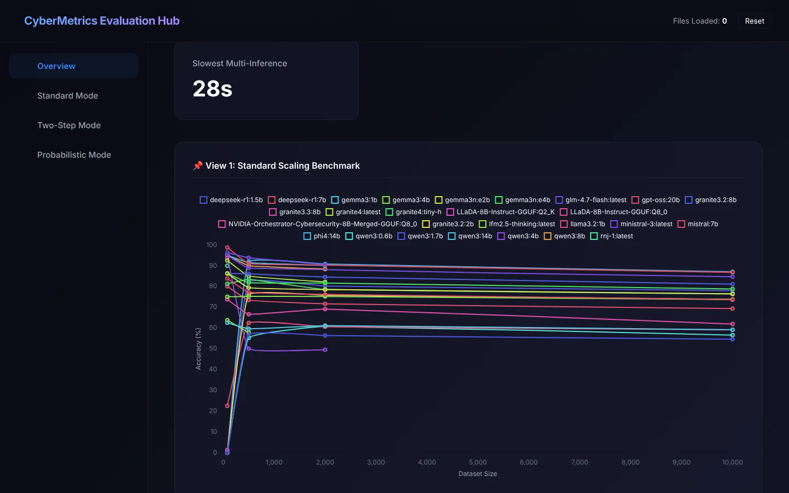
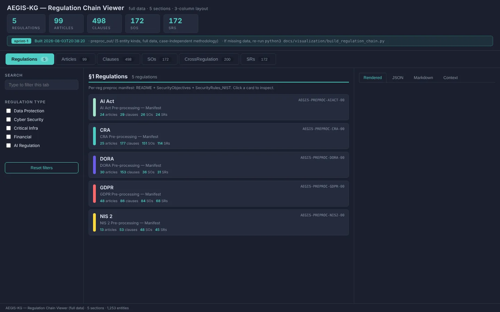
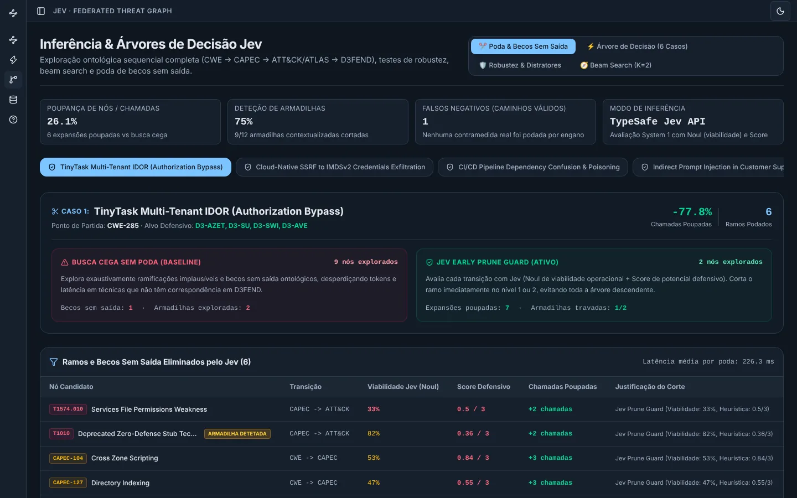
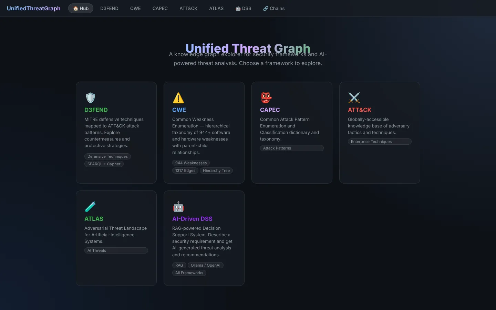
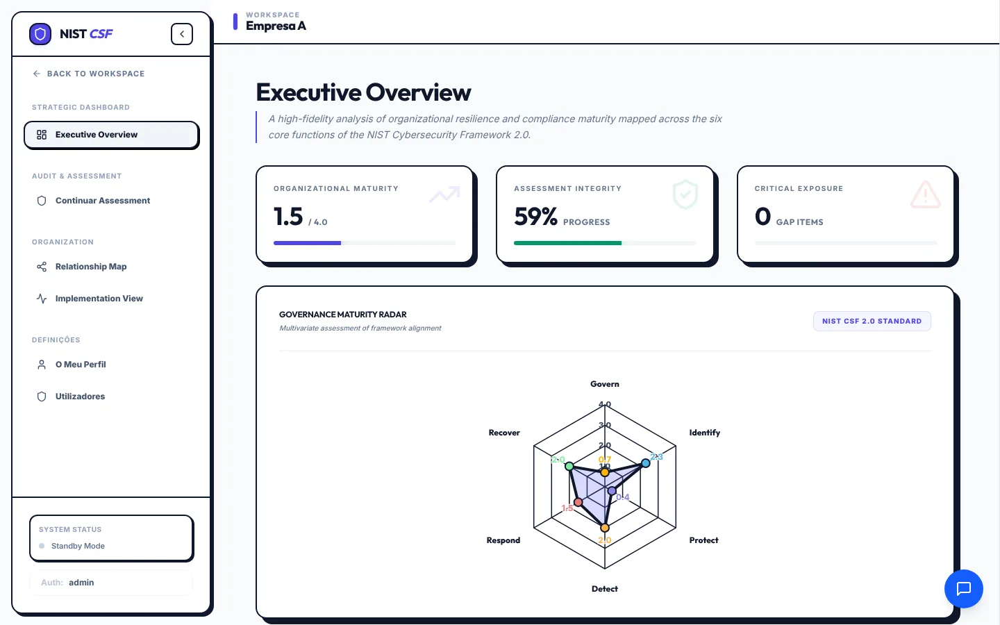
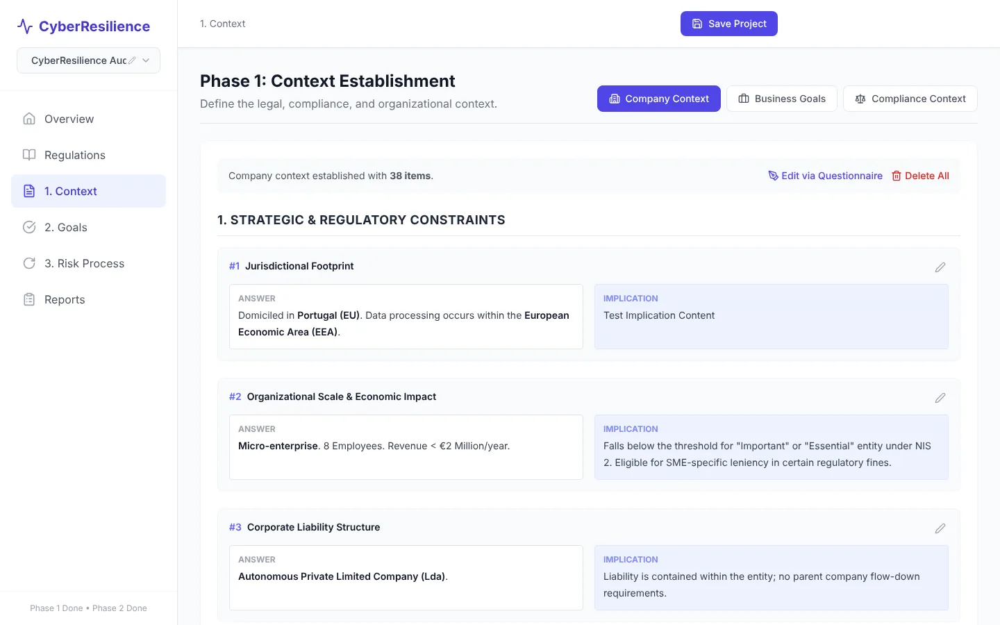
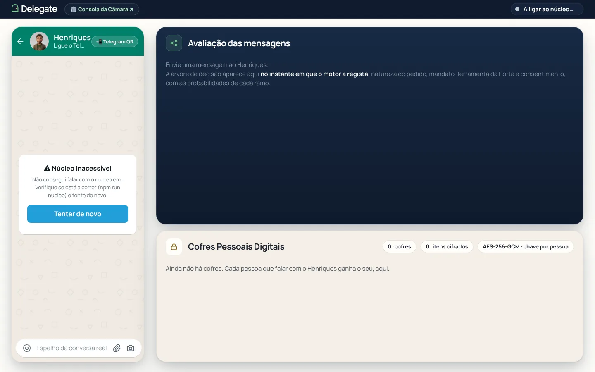

ProjetosProjects
Quase tudo está no GitHub. Os poucos projetos privados estão assinalados.
Almost everything is on GitHub. The few private ones are marked.
Agentes e modelos de linguagemAgents and language models
- aegis-mvp — o código das experiências no Deucalion: pipelines contra agentes, reprodutibilidade e o laboratório de prompts (
lab/).— the code behind the Deucalion experiments: pipelines vs. agents, reproducibility and the prompt lab (lab/).Python · SLURM - aegis-inspector (privado)(private) — o inspector que uso para ver cada corrida da pipeline: etapas, prompts, respostas, artefactos, e duas corridas lado a lado.— the inspector I use to look at each pipeline run: steps, prompts, responses, artefacts, and two runs side by side.React 19 · Express

- financial-adviser — 15 personas de investidores (Buffett, Burry, Taleb…) discutem em várias rondas os relatórios SEC de uma empresa, até ficar claro em que pressupostos discordam.— 15 investor personas (Buffett, Burry, Taleb…) argue over a company's SEC filings across several rounds until it's clear which assumptions they disagree on.Python · LangChain · Langfuse
- Agentic-Orquestrator, harness-design-best-practices, my-skills — orquestração de 20 agentes para DevSecOps e as skills e harnesses que fui juntando para agentes de longa duração.— orchestrating 20 DevSecOps agents, plus the skills and harnesses I've collected for long-running agents.
- Cybersecurity_sanity_test, Cybersecurity_Sanity_Tests — comparação de mais de 13 LLMs locais com o CyberMetric, de 80 até 10 000 perguntas.— comparing 13+ local LLMs on CyberMetric, from 80 up to 10,000 questions.Python · Ollama

- MoE-CySec — routing Mixture-of-Experts com modelos pequenos.— Mixture-of-Experts routing with small models.
- aegis-phase1 — uma máquina de estados em LangGraph que reduziu um processo de 150 chamadas ao modelo para 7–9, e um visualizador da cadeia de regulamentos.— a LangGraph state machine that cut a 150-call process down to 7–9 calls, plus a viewer for the chain of regulations.

- RAGImplementation — uma pipeline RAG desmontada passo a passo (parsing, chunking, reranking) para ver o que cada etapa acrescenta.— a RAG pipeline taken apart step by step (parsing, chunking, reranking) to see what each stage adds.
- Cybersecurity_News_Agent — agente que recolhe notícias de cibersegurança.— an agent that collects cybersecurity news.
- Learning (privado)(private) — 47 palestras sobre agentes resumidas em 443 afirmações, cada uma com a sua fonte.— 47 talks on agents boiled down to 443 claims, each with its source.
Grafos de conhecimentoKnowledge graphs
- Jev — percorre um grafo de ameaças com 2 886 nós usando decisões pequenas (
Noul,Choice,Score) em menos de 50 ms.— walks a 2,886-node threat graph using small decisions (Noul,Choice,Score) in under 50 ms.Neo4j
- D3fendGraph, VisioSec — CAPEC, CWE, ATT&CK, ATLAS e D3FEND em GraphDB e Neo4j, com visualização de kill chains.— CAPEC, CWE, ATT&CK, ATLAS and D3FEND in GraphDB and Neo4j, with kill-chain views.GraphDB · SPARQL · Neo4j · Docker

- aegis-kg-unified — mais de 150 cláusulas do RGPD, CRA, NIS2, DORA e AI Act ligadas a 38 subdomínios de segurança.— 150+ clauses from GDPR, CRA, NIS2, DORA and the AI Act linked to 38 security sub-domains.Neo4j · Flask
GRC e requisitos de segurançaGRC and security requirements
- NIST_Assessment — avaliação de maturidade segundo o NIST CSF 2.0, com um assistente via MCP ao lado.— NIST CSF 2.0 maturity assessment with an MCP assistant alongside.FastAPI · Ollama

- CyberResilience, Methodology_compact — análise de risco por fases (contexto, objetivos, risco) para RGPD, NIS2, DORA, CRA, AI Act e QNRCS.— phased risk analysis (context, goals, risk) for GDPR, NIS2, DORA, CRA, the AI Act and QNRCS.React · Vite

- MultiLLMs, RegulationExpert — vários LLMs a responder sobre legislação europeia (RAG sobre os textos legais), para comparar onde concordam.— several LLMs answering questions on EU law (RAG over the legal texts), to compare where they agree.Qdrant · LlamaIndex
- The_Scribe — ajuda a escrever requisitos de segurança fazendo perguntas, com base no SPIDESOFT. Comecei-o no mestrado.— helps write security requirements by asking questions, based on SPIDESOFT. Started during my master's.
- DockerVulnManager — hardening de Docker segundo o CIS.— Docker hardening against CIS benchmarks.Trivy
- FileEvaluation, JsonGDPREvaluationAPI — deteção de dados pessoais (RGPD) em ficheiros.— detecting personal data (GDPR) in files.
Apps e LinuxApps and Linux
- delegate — Hack4Guimarães 2035: um representante digital para cada munícipe e um gateway MCP para a Câmara.— Hack4Guimarães 2035: a digital representative for each resident and an MCP gateway for the council.TypeScript · MCP · Telegram

- finflow — finanças pessoais no Android, offline e com a base de dados cifrada.— personal finance on Android, offline with an encrypted database.Kotlin · Compose · SQLCipher
- Piano & Pautas (privado)(private) — a app com que estou a aprender piano. O som é sintetizado no próprio telemóvel.— the app I'm learning piano with. Sound is synthesised on the phone itself.
- omarchy-mobile — Arch Linux ARM e Hyprland num Pixel 7 Pro com kernel mainline.— Arch Linux ARM and Hyprland on a Pixel 7 Pro with a mainline kernel.
- Template_React — o template de onde começo projetos web.— the template I start web projects from.React 19 · Express · Prisma